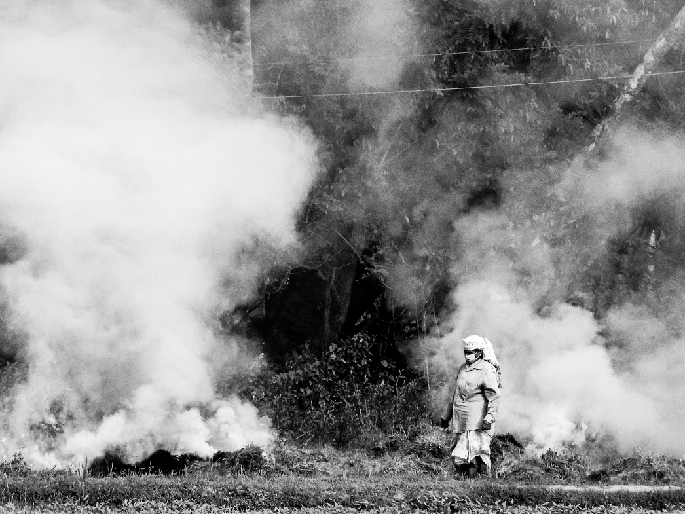
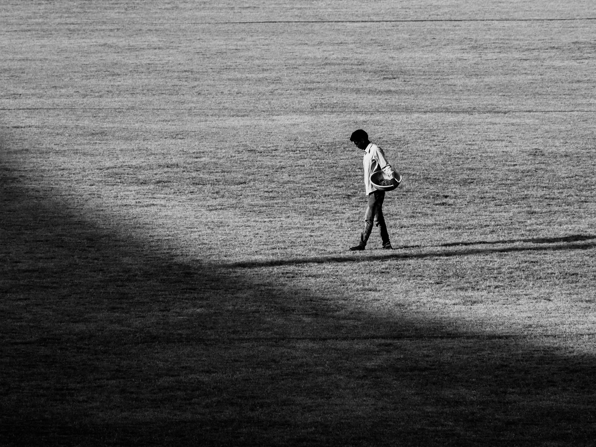
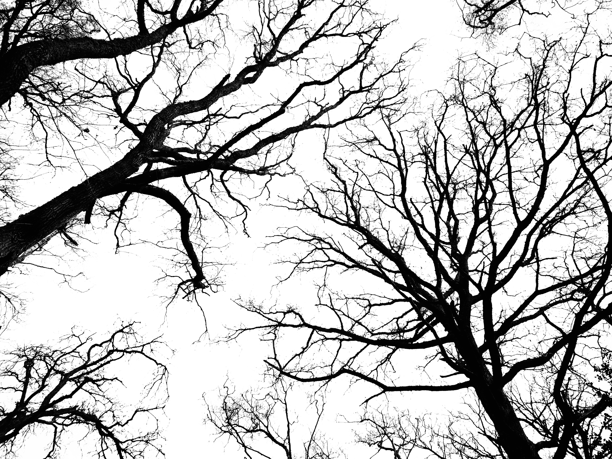
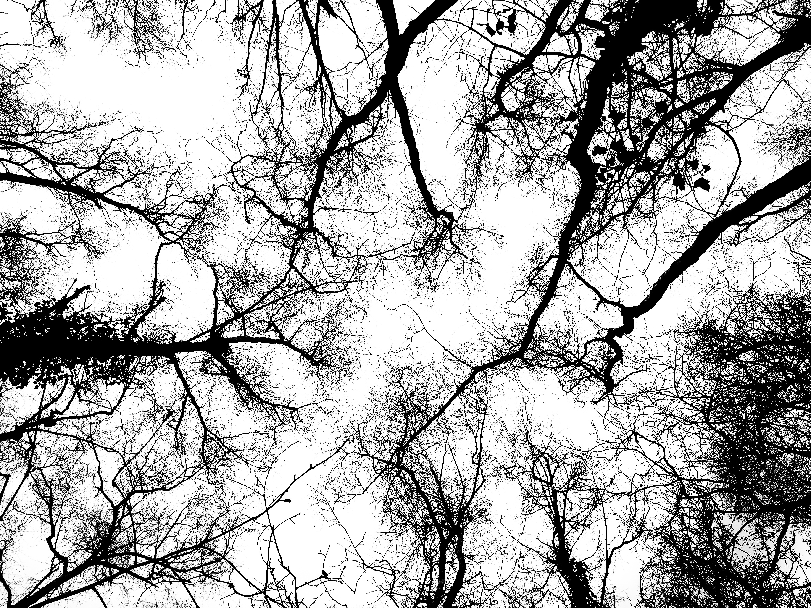
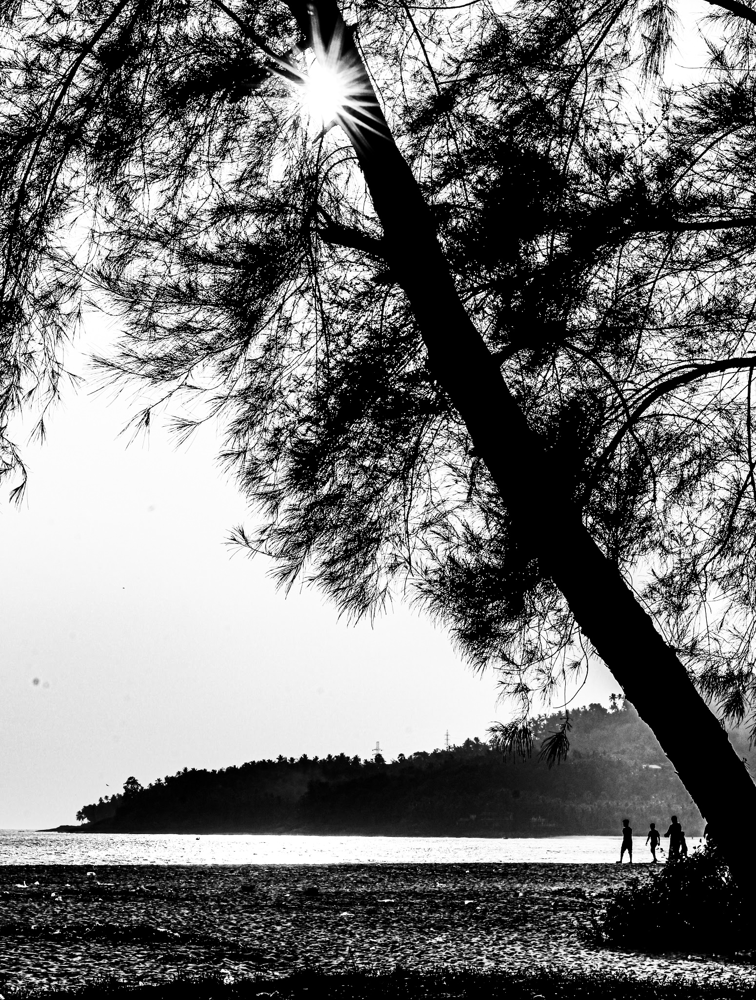

What the Land Keeps examines the relationship between human presence and the environments that outlast it.
Across landscapes, pathways, structures and temporary traces, the photographs attend to moments in which occupation is visible only indirectly. Figures appear at a distance, disappear into their surroundings, or are replaced by objects and marks that suggest a recent presence.
Rather than approaching landscape as scenery, the work considers it as a space continuously altered by passage. A path, an abandoned object, smoke, a structure partially obscured by vegetation or a solitary figure crossing open ground becomes evidence of an encounter already beginning to disappear.




